Apresentações
Apresentações
Sobre mim

- Desenvolvedor há 15 anos
- Entusiasta em cibersegurança
- Consultor de TI e instrutor de treinamentos
Campitelli
Slides
viniciuscampitelli.comGitHub
vcampitelliTwitter X
vcampitelliApresentações
Sobre a turma
Para cada pessoa aqui, se apresente:
- Qual seu nome?
- Quais ferramentas e/ou linguagens que mais usa?
- Qual seu grau de conhecimento e suas maiores dificuldades com o git?
Sobre o curso
- As aulas ficarão gravadas para poderem assistir
- Os slides ficarão disponíveis para poderem consultar
- Interajam! Façam perguntas (via áudio ou mensagem no chat)
- Acesse o grupo do WhatsApp para facilitar nossa comunicação
- Teremos uma avaliação final
Agenda
Agenda
| Tema | Duração |
|---|---|
| Total | 45:00 |
| Apresentações | 01:00 |
| Introdução | 01:00 |
| Conceitos Fundamentais de Controle de Versão | 01:00 |
| Configuração de um Ambiente de Controle de Versão | 06:00 |
| Gerenciamento de Branches e Merging | 06:00 |
| Gerenciamento de Projeto com o GitLab Community | 06:00 |
| Gerenciamento de Configuração e Versionamento de Arquivos com o Git e GitLab Community | 10:00 |
| Boas Práticas e Fluxo de Trabalho Eficiente com Git e GitLab Community | 05:00 |
| Gerenciamento de Configuração e Fluxo de Trabalho em Equipes | 04:00 |
| Segurança e Controle de Acessos no GitLab Community | 03:00 |
| Anti-padrões de Uso do Git e GitLab | 01:00 |
| Avaliação final | 01:00 |
Agenda
| Seg | Ter | Qua | Qui | Sex |
|---|---|---|---|---|
| 18/09 Aula 1 | 19/09 Aula 2 | 20/09 Aula 3 | 21/09 Aula 4 | 22/09 Aula 5 |
| 25/09 Aula 6 | 26/09 Aula 7 | 27/09 Aula 8 | 28/09 | 29/09 |
| 02/10 Aula 9 | 03/10 Aula 10 | 04/10 Aula 11 | 05/10 | 06/10 |
| 09/10 | 10/10 | 11/10 | 12/10 | 13/10 |
| 16/10 | 17/10 Aula 12 | 18/10 Aula 13 | 19/10 Aula 14 | 20/10 Aula 15 |
Introdução e Conceitos
Introdução e Conceitos
Gerenciamento de Configuração
Processo de engenharia de sistemas para estabelecer a consistência dos atributos de um produto ao longo da vida dele. (...) Processo de gerenciamento de TI que monitora itens de configuração individuais de um sistema de TI.Gerenciamento de configuração: definição e benefícios (Atlassian)
Introdução e Conceitos
Gerenciamento de Configuração
Principais benefícios:
- Controle efetivo de versões
- Rastreabilidade das mudanças
- Colaboração em equipe
- Melhoria da qualidade do código
- Facilidade de recuperação em caso de problemas
Introdução e Conceitos
Controle de Versão
Sistemas de Versionamento de Código (em inglês: "Version Control System" ou VCS) são serviços responsáveis por controlar modificações e diferentes versões do código de nossos sistemas, fornecendo histórico para alterações, trabalho em equipe e separação do ambiente de trabalho entre colaboradores
Conceitos Fundamentais de Controle de Versão
Tipos de Controle de Versão
Centralizado
Um servidor central é responsável por receber todas as modificações dos colaboradores
Toda alteração feita na máquina é automaticamente enviada ao servidor central
Vários metadados ficam apenas no servidor principal, acarretando em um único ponto de falha
Distribuído
Mesmo havendo um servidor principal, os colaboradores possuem suas cópias offline que podem servir inclusive como backup
As alterações são primeiro realizadas na cópia local do servidor e, depois, devem ser enviadas para o servidor principal pelo colaborador
Conceitos Fundamentais de Controle de Versão
Ferramentas de Controle de Versão
Alguns dos principais Sistemas de Controle de Versão são:
- Source Code Control System (SCSS), lançado em 1973;
- Concurrent Versions System (CVS), lançado em 1986 (mas que teve sua primeira versão disponível para a comunidade em 1990);
- Subversion (SVN), lançado em 2000;
- BitKeeper, lançado em 2000;
- Mercurial (Hg), lançado em 2005;
- Git, lançado em 2005.
Introdução e Conceitos
Git
Ferramenta criada por Linus Torvalds (o criador do Linux) em 2005, após a licença do BitKeeper se tornar paga, impossibilitando seu uso no Linux
BitKeeper and Linux: The end of the road?Introdução e Conceitos
Git
Palestra do Linus Torvalds sobre git em 2007Introdução e Conceitos
Git
Principais conceitos
The development of Git began on 3 April 2005. Torvalds announced the project on 6 April and became self-hosting the next day. The first merge of multiple branches took place on 18 April. Torvalds achieved his performance goals; on 29 April, the nascent Git was benchmarked recording patches to the Linux kernel tree at a rate of 6.7 patches per second. On 16 June, Git managed the kernel 2.6.12 release. Torvalds turned over maintenance on 26 July 2005 to Junio Hamano, a major contributor to the project. Hamano was responsible for the 1.0 release on 21 December 2005.Git (Wikipedia)
Introdução e Conceitos
Visão Geral do GitLab Community
- Plataforma criada em 2011 para gerenciar aplicações, versões, implantações, gerenciamento de projetos e times, integração contínua, e muito mais...
- Se intitula uma plataforma de DevSecOps, que veremos alguns conceitos durante o treinamento
- Possui planos gratuitos e pagos
- Podemos usá-lo como SaaS (Software-as-a-Service) ou hospedando-o em nossos próprios servidores
Introdução e Conceitos
Conceitos gerais
Repositório
Entidade básica do versionamento, contemplando todas as versões do código, branches, tags e parâmetros de configuração do projeto que serão lidos pelo git (como quais arquivos devem ser ignorados e mantidos)
Plataformas como o GitLab oferecem mais recursos para facilitar a manutenção do projeto, como:
- Automações de segurança;
- Esteiras de CI/CD;
- Gestão de problemas através de "issues";
- Revisão para aprovações de mudanças (merge requests);
- Wikis para manter a documentação do projeto;
- Entre muitos outros.
Introdução e Conceitos
Conceitos gerais
Branch
Ramificações do repositório, possibilitando criar "cópias" do código para podermos trabalhar em atividades diferentes da nossa aplicação ao mesmo tempo, como resolução de bugs ou criação de novas funcionalidades
Introdução e Conceitos
Conceitos gerais
Diff
Comparação entre dois arquivos para encontrar as mudanças entre os dois, sendo uma forma de representar alterações incrementais em um sistema
Imagine então que...
-
Existe uma aplicação de terceiros chamada
minha-aplicacao -
Você gostaria de alterar algo em um arquivo
build - Você precisa enviar essas mudanças para que o mantenedor as incorpore
-
É possível fazer isso com os comandos
diffepatchdo Unix, sem precisar de sistemas de controle de versão!
$ diff -ruN minha-aplicacao/ > mudancas.path
$ patch -p0 < mudancas.patch
Introdução e Conceitos
Conceitos gerais
Commit
Conjunto de diffs de arquivos distintos, acompanhado de metadados para identificar o autor daquela ação, a data em que foi realizada e uma mensagem explicando o que foi feito
No git, todo commit é representando por um hash SHA-1, que leva em consideração todos os metadados descritos acima, as alterações realizadas e o hash do commit anterior ("pai"), garantindo assim a integridade daquela ação
32b3b430c8bf4b029422f82f164330cd91a9a2e3
Introdução e Conceitos
Conceitos gerais
Merge
Processo de mesclar uma branch em outra, incorporando os commits realizados na branch de origem em uma outra
É feito geralmente quando terminamos o desenvolvimento de uma funcionalidade ou correção de
bugs em uma branch e queremos trazer o código para a principal (por
exemplo, a main)
Introdução e Conceitos
Conceitos gerais
Tag
Marcação que aponta para um determinado commit, sendo normalmente utilizada para demarcar as versões da sua aplicação
Podem receber qualquer nome (por exemplo, versao-inicial ou
alteracao-para-o-novo-layout), mas geralmente utilizamos
Versionamento Semântico
para identificar as versões mais facilmente
Introdução e Conceitos
Conceitos gerais
Staging
Área em que arquivos são adicionados para indicar que estão preparados para serem incluídos no commit
Controle de Versão com Git
Controle de Versão com Git
Acessando o laboratório
Acesse o GitLab disponibilizado em gitlab.viniciuscampitelli.com e cadastre-se
Controle de Versão com Git
Instalando o git
Instruções de instalação do git para cada Sistema Operacional:
- Linux
- Mac
-
Windows
- Sugiro a versão Standalone Installer (e provavelmente deve ser 64-bit Git for Windows Setup)
Controle de Versão com Git
Comandos básicos
git init
Inicializa o diretório atual para ser utilizado como repositório, criando a pasta
.git
git remote
Gerencia os endereços dos servidores remotos para atualização e sincronização do repositório
Documentação oficial: git remoteControle de Versão com Git
Comandos básicos
git clone
Processo de fazer o "download" de um repositório para trabalhar em sua cópia local, também sendo reconhecido pelo termo em inglês de checkout
Documentação oficial: git cloneNo GitLab (e em outras plataformas), pode ser feito através dos protocolos HTTP e SSH
Clone a repository | GitLabControle de Versão com Git
Comandos básicos
git config
Gerencia diversas configurações do seu git, podendo alterar parâmetros globais (que se aplicam a todos os repositórios que você possui em sua máquina) ou exclusivamente no repositório de onde está executando o comando
$ git config user.name "Seu nome"
$ git config user.email "seu-email-do-gitlab@exemplo.com"
Controle de Versão com Git
Comandos básicos
git status
Mostra o estado da árvore de trabalho ("working tree"), exibindo arquivos que foram adicionados, modificados ou excluídos
Também mostra arquivos que estão na área de staging, prontos para participarem do commit, e os que ainda não estão sendo "rastreados"
$ git status
On branch main
Changes to be committed:
(use "git restore --staged <file>..." to unstage)
modified: arquivo/que/foi/adicionado/ao/staging
Changes not staged for commit:
(use "git add <file>..." to update what will be committed)
(use "git restore <file>..." to discard changes in working directory)
modified: arquivo/modificado/que/nao/esta/no/staging
Untracked files:
(use "git add <file>..." to include in what will be committed)
arquivo/nao/adicionado
Controle de Versão com Git
Comandos básicos
git add
Adiciona arquivos (ou diretórios) para a área de staging
$ git status
On branch main
No commits yet
nothing to commit (create/copy files and use "git add" to track)
$ touch novo-arquivo
$ git add novo-arquivo
$ git status
On branch main
No commits yet
Changes to be committed:
(use "git rm --cached <file>..." to unstage)
new file: novo-arquivo
Controle de Versão com Git
Comandos básicos
git commit
"Captura" os arquivos que estão na área de staging em um pacote que poderá ser enviado ao servidor remoto posteriormente
É possível adicionar todos os arquivos da área de staging ou apenas alguns deles
Se não especificarmos o parâmetro -m "mensagem do commit" para informar a
mensagem, um editor de texto será aberto para que possamos fornecê-la
Controle de Versão com Git
Comandos básicos
git log
Mostra o histórico de commits naquele branch ou de um arquivo específico
Documentação oficial: git logControle de Versão com Git
Comandos básicos
git push
Envia os commits que estão no repositório local para o servidor remoto
Documentação oficial: git pushControle de Versão com Git
Comandos básicos
git mv
Move ou renomeia um arquivo da cópia de trabalho
Documentação oficial: git mvControle de Versão com Git
Comandos básicos
git rm
Remove um arquivo da cópia de trabalho
Documentação oficial: git rmControle de Versão com Git
Comandos básicos
git diff
Mostra as diferenças entre os arquivos atuais e o que está no servidor remoto ou entre commits
Documentação oficial: git diffControle de Versão com Git
Comandos básicos
git show
Exibe detalhes de um commit, tag ou de um arquivo específico
Documentação oficial: git showControle de Versão com Git
Comandos básicos
git fetch
Atualiza os metadados do repositório a partir do servidor remoto
Documentação oficial: git fetchControle de Versão com Git
Comandos básicos
git pull
Atualiza os metadados do repositório (como o git fetch) e atualiza sua cópia
local com as alterações da branch especificada (como o git merge, que
veremos nas aulas a seguir)
Controle de Versão com Git
Continuação
Controle de Versão com Git
Comandos intermediários
git --help
Todos os comandos do git possuem um parâmetro --help para mostrar mais detalhes
sobre como podemos usá-los!
Controle de Versão com Git
Comandos intermediários
git log
Já vimos como usá-lo de forma mais simples, mas existem diversos argumentos para consultarmos o histórico de alterações
Documentação oficial: git logControle de Versão com Git
Comandos intermediários
git log
Para consultar apenas os commits que envolvem um determinado arquivo, utilize o
parâmetro --follow:
$ git log --follow -- <arquivo>
Controle de Versão com Git
Comandos intermediários
git log
Para ter uma visão mais compacta, podemos usar o parâmetro --oneline:
$ git log --oneline
Controle de Versão com Git
Comandos intermediários
git log
Para saber os arquivos modificados, utilize --stat:
$ git log --stat
Controle de Versão com Git
Comandos intermediários
git log
Para procurar os commits de um único autor, utilize --author:
$ git log --author "Parte do nome ou email do autor"
Controle de Versão com Git
Comandos intermediários
git log
Para retornar apenas os commits após uma certa data, utilize --after:
$ git log --after "2023-01-01"
Controle de Versão com Git
Comandos intermediários
git log
Para retornar apenas os commits antes de uma certa data, utilize
--before:
$ git log --before "2023-01-01"
Controle de Versão com Git
Comandos intermediários
git log
Para buscar apenas os commits que possuem certa mensagem, utilize
--grep:
$ git log --grep "Parte da mensagem"
Controle de Versão com Git
Comandos intermediários
git log
Para buscar commits que possuem uma certa string de código que foi
adicionada ou excluída, utilize -S:
$ git log -S "console.log"
Isso irá mostrar todos os commits em que houveram adições ou exclusões do texto
console.log
Controle de Versão com Git
Comandos intermediários
git log
Para buscar commits que possuem uma certa string de código que foi
adicionada, excluída ou modificada, utilize -G:
$ git log -G "console.log"
Isso irá mostrar todos os commits em que houveram adições, exclusões ou
modificações do texto console.log
Controle de Versão com Git
Comandos intermediários
git log
Para visualizar de forma gráfica os commits, branches e merges do
repositório, utilize --graph:
$ git log --graph
Controle de Versão com Git
Comandos intermediários
git log
Para buscar apenas alterações entre as linhas 50 e 100 de um arquivo index, execute:
$ git log -L 50,100:index
Controle de Versão com Git
Comandos intermediários
git shortlog
Forma de visualizar o histórico do git log de uma forma mais simples
Controle de Versão com Git
Comandos intermediários
git blame
Saiba qual foi a última modificação em cada linha do arquivo
Documentação oficial: git blameControle de Versão com Git
Comandos intermediários
git checkout
Altera a branch em que você está trabalhando, cria uma nova branch ou restaura um arquivo a partir da branch informada
Documentação oficial: git checkoutControle de Versão com Git
Comandos intermediários
git branch
Lista, cria ou exclui branches, podendo também mostrar as que contém ou não determinado commit
Documentação oficial: git branchControle de Versão com Git
Comandos intermediários
git branch
Para excluir um branch que está apenas na sua cópia local:
$ git branch -d nome-do-branch # Isso exclui apenas branches que já foram "mergeados"
$ git branch -D nome-do-branch # Para excluir branches que ainda não foram "mergeados"
Controle de Versão com Git
Comandos intermediários
git branch
Para excluir um branch do servidor remoto:
$ git push -d origin nome-do-branch
Fluxos de Trabalho
Fluxos de Trabalho
Configuração de um Projeto no GitLab
Antes de vermos sobre os fluxos, vamos ver algumas configurações possíveis para gerenciamento dos projetos no GitLab:
- Definindo permissões;
- Proteção de branches;
- Arquivos
README; - Criação de Wikis;
- Criação de Issues;
- Abertura e resoluções de Merge requests;
- Configurações de CI/CD;
- Entre outros.
Fluxos de Trabalho
Para facilitar a colaboração entre pessoas diferentes em um mesmo repositório, é recomendado o seguinte fluxo para uso do git no dia-a-dia:
- Antes de criar uma funcionalidade ou corrigir um bug, crie uma branch e trabalhe nela
-
Após terminar o desenvolvimento, abra um merge request para que outras pessoas
possam avaliar aquele código (code review) e realizar os devidos testes
- Se forem requisitadas mudanças, altere o código e peça uma nova avaliação
-
Ao ser aprovado, você ou o mantenedor do repositório deve realizar o
merge na branch principal (
main)
-
A branch principal (
main) possui códigos que estão prontos para serem publicados em produção ou disponibilizados para os clientes
Fluxos de Trabalho
Git Flow
Lançado em 2010, tem sido desencorajado para a grande maioria dos projetos, a não ser para os que trabalham com datas fixas para o lançamento de cada versão
-
Possui duas branches principais:
mainedevelop -
Para cada nova funcionalidade ou correção de bugs, devemos criar uma
branch a partir de
develop, que será mesclada de volta ao fim do desenvolvimento -
Ao se aproximar da data de lançamento (ou quando houver conteúdo o suficiente para uma
nova versão), uma nova branch chamada
releaseserá criada a partir dadevelop -
A partir desse momento, a branch
developnão deve conter novos recursos, apenas correções de segurança, melhorias de implementação ou documentação -
Quando tudo estiver pronto, fazemos o merge do
releasepara amain
Fluxos de Trabalho
Git Flow
Exemplo:
-
Na
main, temos a versão atual -
Criamos a branch
developa partir dav1.0 -
Para cada desenvolvimento, criamos uma nova branch a partir da
develop -
Ao terminar cada desenvolvimento, fazemos o merge para a
develop -
Na data de congelamento do release, paramos de aceitar novas funções e
criamos a branch
release - Apenas correções e melhorias serão aceitas
-
Quando tudo estiver testado e aceito, fazemos o merge da
releasepara amaine geramos uma nova versão para publicar
Fluxos de Trabalho
GitHub Flow
Mais simples que o Git Flow, permite a publicação do software sempre que terminamos o desenvolvimento de uma funcionalidade ou correção de bug
Para isso, é primordial termos configurado esteiras de CI/CD para testar e integrar as alterações do sistema (que veremos em breve)
Fluxos de Trabalho
GitLab Flow
No GitHub Flow, a branch main sempre representa o que está
em produção
No GitLab Flow, criamos uma outra branch chamada production,
separando assim funcionalidades estáveis (que estão na main) para aquelas que
estão realmente publicadas (production)
Gerenciamento de Branches
Gerenciamento de Branches
Merging
O merge é utilizado quando queremos incorporar todas as modificações efetuadas em uma branch em uma outra
Gerenciamento de Branches
Merging
git merge
Faz a incorporação de uma branch em outra, podendo "achatar" todos os
commits em um só através do parâmetro --squash
Gerenciamento de Branches
Resolução de Conflitos
Ao executarmos o git merge, se alguma das branches possuir
modificações nas mesmas linhas de um arquivo (ou se uma branch editou um arquivo e
a outra o removeu), o git irá exibir uma mensagem de conflito, pois não
sabe qual dessas modificações deve aplicar
Gerenciamento de Branches
Resolução de Conflitos
$ git merge develop
Auto-merging README
CONFLICT (content): Merge conflict in README
Automatic merge failed; fix conflicts and then commit the result.
$ git status
On branch main
You have unmerged paths.
(fix conflicts and run "git commit")
(use "git merge --abort" to abort the merge)
Unmerged paths:
(use "git add/rm <file>..." to mark resolution)
both modified: README
Gerenciamento de Branches
Resolução de Conflitos
Ao abrir o arquivo com conflitos em um editor de textos, você verá marcações como essas:
Linha 1
<<<<<<< HEAD
Linha 2 <-- alterando linha 2 na main
=======
Linha 2 <-- alterado na develop
>>>>>>> develop
Linha 3
Essas marcações ao redor das linhas "Linha 2" indicam os blocos com alterações conflitantes:
-
O primeiro bloco, que começa em
<<<<<<<e vai até=======, mostra o que temos atualmente noHEAD -
O segundo bloco (entre o mesmo
=======até o próximo>>>>>>>) nos informa o que está vindo dadevelop
Gerenciamento de Branches
Resolução de Conflitos
Para resolver o conflito manualmente, devemos resolver todo o código entre
<<<<<<< e >>>>>>>,
removendo essas marcações
Linha 1
<<<<<<< HEAD
Linha 2 <-- alterando linha 2 na main
=======
Linha 2 <-- alterado na develop
>>>>>>> develop
Linha 3
Gerenciamento de Branches
Resolução de Conflitos
Para resolver o conflito manualmente, devemos resolver todo o código entre
<<<<<<< e >>>>>>>,
removendo essas marcações
Linha 1
Linha 2 <-- mesclando alterações da main e da develop
Linha 3
Gerenciamento de Branches
Resolução de Conflitos
Pode se tornar difícil resolver esses conflitos manualmente, então dê preferência a resolvê-los com algumas ferramentas:
- Sua própria IDE ou editor de texto, como o Visual Studio Code
- Interfaces gráficas do Git, que podem ser baixadas em git-scm.com/downloads/guis
- Aplicações especializadas de comparação, como as apresentadas nesta lista
Exercício
Fluxo de Trabalho
Exercício
Fluxo de Trabalho
Dividam-se em grupos e...
Pessoa 1
-
Acesse o repositório
vcampitelli/exerciciosno GitLab - Clone o repositório em sua máquina
-
Crie uma nova branch chamada
sprint-grupo-X, substituindo X pelo número do seu grupo - Faça o push dessa branch
- ⚠️ BUGS EM PRODUÇÃO! Crie duas issues para as duas Pessoas e peça para resolverem algo
- Avalie a merge request dos bugs, aprove-as e faça o merge
-
Avalie a merge request das duas funcionalidades, aprove-as e faça o
merge
- Se necessário, peça para a Pessoa resolver os conflitos
-
Após fazer o merge de todas as funcionalidades da sprint, crie
uma merge request da
sprintpara amain
Pessoas 2 e 3
- Crie uma issue para uma funcionalidade fictícia para alterar algo na procedure de envio de e-mails
- Clone o repositório em sua máquina
-
Crie uma nova branch a partir da
sprint-grupo-Xcom o número da issue -
Implemente as alterações no arquivo
pr_envia_email.sql -
⚠️ BUG EM PRODUÇÃO! Faça o commit parcial do seu trabalho, volte
para a
main, crie uma branch com o nomefix/número-da-issue, corrija o bug e abra uma merge request - Volte para sua branch de desenvolvimento, termine o trabalho, faça o push e abra uma merge request
- Se preciso, resolva os conflitos e faça o push novamente
Mais comandos
Mais comandos
Desfazendo alterações
git restore
Desfaz as modificações em um arquivo, revertendo à versão do último commit
$ git status
On branch main
Changes not staged for commit:
(use "git add <file>..." to update what will be committed)
(use "git restore <file>..." to discard changes in working directory)
modified: arquivo
no changes added to commit (use "git add" and/or "git commit -a")
$ git restore arquivo
$ git status
On branch main
nothing to commit, working tree clean
Mais comandos
Desfazendo alterações
git restore --staged
Retira um arquivo da área de staging
$ git add arquivo
$ git status
On branch main
Changes to be committed:
(use "git restore --staged <file>..." to unstage)
modified: arquivo
$ git restore --staged arquivo
$ git status
On branch main
Changes not staged for commit:
(use "git add <file>..." to update what will be committed)
(use "git restore <file>..." to discard changes in working directory)
modified: arquivo
no changes added to commit (use "git add" and/or "git commit -a")
Mais comandos
Desfazendo alterações
git reset <referência>
Traz todo o estado do commit especificado para o projeto atual, mantendo as modificações locais
$ git log --oneline
9581191 (HEAD -> main) Versão nova
5287db4 Versão antiga
$ git reset 5287db4
Unstaged changes after reset:
M arquivo
$ git log --oneline
5287db4 (HEAD -> main) Versão antiga
Mais comandos
Desfazendo alterações
git reset --hard <referência>
Traz todo o estado do commit especificado para o projeto atual, descartando as modificações locais
$ git log --oneline
9581191 (HEAD -> main) Versão nova
5287db4 Versão antiga
$ git reset --hard 5287db4
HEAD is now at 5287db4 Versão antiga
$ git log --oneline
5287db4 (HEAD -> main) Versão antiga
$ git status
On branch main
nothing to commit, working tree clean
Mais comandos
Desfazendo alterações
git revert <sha1-do-commit>
Ao invés de descartar os commits, esse comando cria um outro commit com as alterações "reversas"
Ou seja: linhas que foram adicionadas serão removidas, as que foram removidas serão adicionadas de volta, arquivos que foram criados serão excluídos, etc...
$ git log --oneline
7d4abd6 (HEAD -> main) Mudanças do arquivo
$ git show 7d4abd6 --oneline
7d4abd6 Mudanças do arquivo
diff --git a/arquivo b/arquivo
index 7898192..3dcb048 100644
--- a/arquivo
+++ b/arquivo
@@ -1 +1 @@
-Versão anterior
+Mudanças do arquivo
Mais comandos
Desfazendo alterações
git revert <sha1-do-commit>
Ao invés de descartar os commits, esse comando cria um outro commit com as alterações "reversas"
Ou seja: linhas que foram adicionadas serão removidas, as que foram removidas serão adicionadas de volta, arquivos que foram criados serão excluídos, etc...
$ git revert 7d4abd6
[main 26b83e6] Revert "Mudanças do arquivo"
1 file changed, 1 insertion(+), 1 deletion(-)
$ git log --oneline
26b83e6 (HEAD -> main) Revert "Mudanças do arquivo"
7d4abd6 Mudanças do arquivo
$ git show 26b83e6 --oneline
26b83e6 (HEAD -> main) Revert "Mudanças do arquivo"
diff --git a/arquivo b/arquivo
index 3dcb048..7898192 100644
--- a/arquivo
+++ b/arquivo
@@ -1 +1 @@
-Mudanças do arquivo
+Versão anterior
Mais comandos
Atualizando o início da branch
git rebase <nome-da-branch>
"Move" o início da sua branch para outro lugar no histórico de commits, útil para trazer as modificações da main, por exemplo

Mais comandos
Atualizando o início da branch
git rebase <nome-da-branch>
"Move" o início da sua branch para outro lugar no histórico de commits, útil para trazer as modificações da main, por exemplo
Mais comandos
Fazendo fork do repositório
Cria uma cópia de um repositório para a sua conta, permitindo trabalhar em projetos que você não possui acesso de escrita
Após o término do desenvolvimento, é possível abrir merge requests do seu repositório para o do projeto "real"
Mais comandos
Lidando com servidores remotos
git remote
$ git clone https://endereço.de.um.fork/repositorio
$ cd repositorio
$ git remote add fork https://endereço.do.repositório.original/repositorio
$ git pull fork main
From endereço.do.repositório.original/repositorio
* branch main -> FETCH_HEAD
Updating 4376dc6..4d5f660
Fast-forward
README.md | 1 +
1 file changed, 1 insertion(+)
create mode 100644 README.md
$ git push origin main